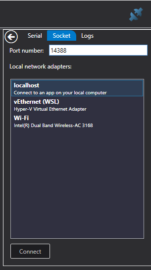

日志查看器#
LogViewer 是一款 Windows WPF 应用，用于显示从虚幻模拟器获取的 MavLink 数据流。 您可以使用它来监控无人机飞行过程中的运行情况。 例如，下图显示了模拟器生成的 x、y 和 z 陀螺仪传感器信息的实时图表。
使用#
您可以打开一个日志文件，它支持 .mavlink 和 PX4 *.ulg 文件，然后您将在左侧的树状视图中看到日志的内容，您选择的任何指标都将添加到右侧。 您可以使用每个图表右上角的小关闭框关闭每个图表， 并且您可以使用顶部工具栏上的“分组图表”按钮将图表分组，使它们共享相同的纵轴。

There is also a map option which will plot the GPS path the drone took. You can also load multiple log files so you can compare the data from each.
Realtime#
You can also get a realtime view if you connect the LogViewer before you run the simulation.

For this to work you need to configure the settings.json with the following settings:
{
"SettingsVersion": 1.2,
"SimMode": "Multirotor",
"Vehicles": {
"PX4": {
...,
"LogViewerHostIp": "127.0.0.1",
"LogViewerPort": 14388,
}
}
}
Note: do not use the "Logs" setting when you want realtime LogViewer logging. Logging to a file using "Logs" is mutually exclusive with LogViewer logging.
Simply press the blue connector button on the top right corner of the window, select the Socket
tab, enter the port number 14388, and your localhost network. If you are using WSL 2 on
Windows then select vEthernet (WSL).
If you do choose vEthernet (WSL) then make sure you also set LocalHostIp and
LogViewerHostIp to the matching WSL ethernet address, something like 172.31.64.1.
Then press the record button (triangle on the right hand side of the toolbar). Now start the simulator, and the data will start streaming into LogViewer.
The drone view in Log Viewer shows the actual estimated position coming from the PX4, so that is a great way to check whether the PX4 is in sync with the simulator. Sometimes you can see some drift here as the attitude estimation catches up with reality, this can become more visible after a bad crash.
Installation#
If you can't build the LogViewer.sln, there is also a click once installer.
Configuration#
The magic port number 14388 can be configured in the simulator by editing the settings.json
file. If you change the port number in LogViewer connection dialog then be sure
to make the matching changes in your settings.json file.
Debugging#
See PX4 Logging for more information on how to use the LogViewer to debug situations you are setting.